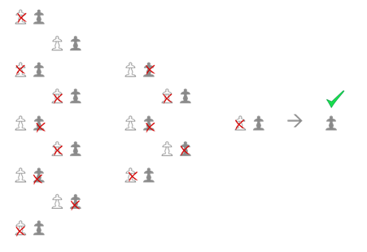
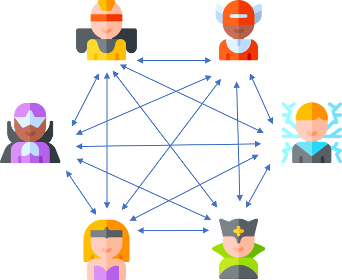
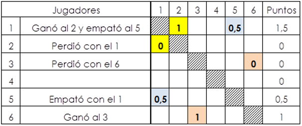

Es el típico sistema de todos contra todos.
El número de rondas de juego es igual al número de participantes menos uno, teniendo en cuenta que si son impares habrá que inscribir a un jugador fantasma para que sean pares (al que le toque jugar contra él libra el turno). En cada ronda se van alternando los colores blanco y negro.
Si se va a jugar ida y vuelta (con blancas y negras en cada emparejamiento) el número de rondas es el doble.
Es el sistema ideal para una liga o para un torneo de partidas rápidas y pocos jugadores
 .

Para dirigir el torneo se anotan los resultados de cada ronda en la tabla de los emparejamientos así:
1-0 si ganan blancas 0,5-0,5 si tablas 0-1 si ganan negras
A continuación, en la tabla resumen, se apunta a cada jugador en su fila los puntos que ha conseguido coincidiendo
con la columna del oponente. Ten en cuenta que cada partida requiere dos anotaciones en esta tabla (con simetría diagonal)
El algoritmo para definir los emparejamientos es sencillo, pero todavía más fácil es descargar estos cuadrantes que hemos preparado.